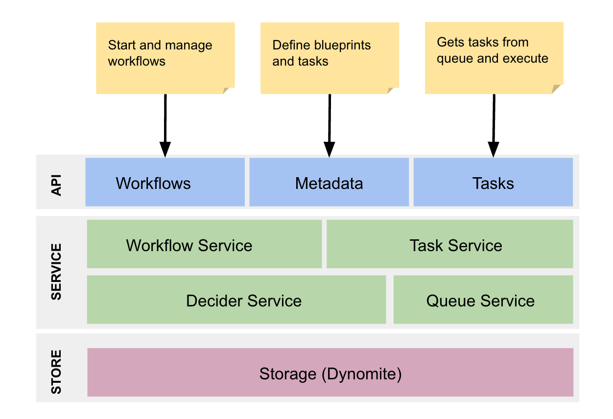

High Level Architecture¶

The API and storage layers are pluggable and provide ability to work with different backend and queue service providers.
Installing and Running¶
Requirements¶
- Database: Dynomite
- Indexing Backend: Elasticsearch 2.x
- Servlet Container: Tomcat, Jetty, or similar running JDK 1.8 or higher
Runnin In-Memory Server¶
Follow the steps below to quickly bring up a local Conductor instance backed by an in-memory database with a simple kitchen sink workflow that demonstrate all the capabilities of Conductor.
Warning
In-Memory server is meant for a quick demonstration purpose and does not store the data on disk. All the data is lost once the server dies.
Checkout the source from github¶
git clone git@github.com:Netflix/conductor.git
Start Local Server¶
cd server
../gradlew server
# wait for the server to come online
Swagger APIs can be accessed at http://localhost:8080/
Start UI Server**¶
cd ui
gulp watch
Launch UI at http://localhost:3000/
Runtime Model¶
Conductor follows RPC based communication model where workers are running on a separate machine from the server. Workers communicate with server over HTTP based endpoints and employs polling model for managing work queues.

Notes
- Workers are remote systems and communicates over HTTP (or any supported RPC mechanism) with conductor servers.
- Task Queues are used to schedule tasks for workers. We use dyno-queues internally but it can easily be swapped with SQS or similar pub-sub mechanism.
- conductor-redis-persistence module uses Dynomite for storing the state and metadata along with Elasticsearch for indexing backend.
- See section under extending backend for implementing support for different databases for storage and indexing.
High Level Steps¶
Steps required for a new workflow to be registered and get executed:
- Define task definitions used by the workflow.
- Create the workflow definition
- Create task worker(s) that polls for scheduled tasks at regular interval
Trigger Workflow Execution
POST /workflow/{name}
{
... //json payload as workflow input
}
Polling for a task
GET /tasks/poll/batch/{taskType}
Update task status
POST /tasks
{
"outputData": {
"encodeResult":"success",
"location": "http://cdn.example.com/file/location.png"
//any task specific output
},
"taskStatus": "COMPLETED"
}